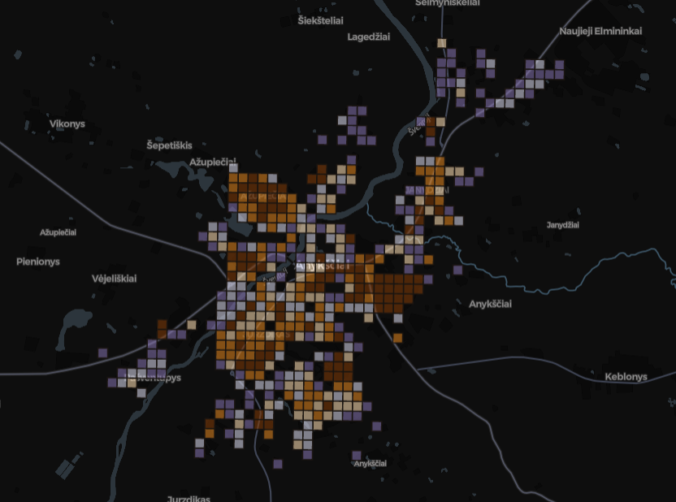
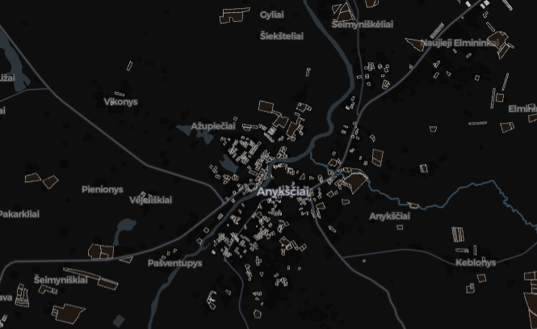
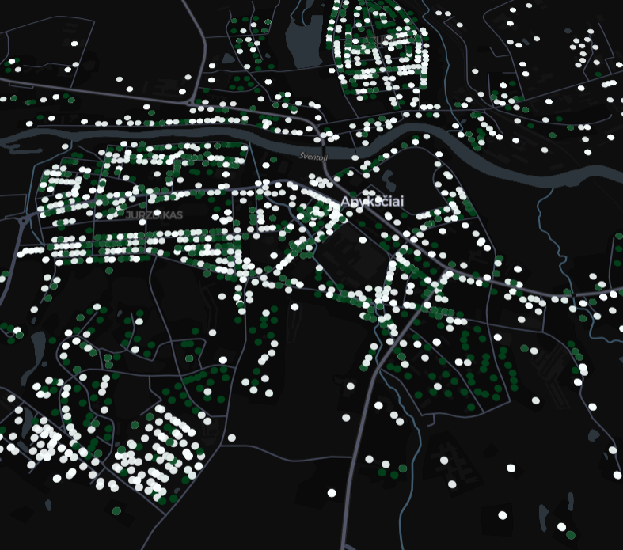
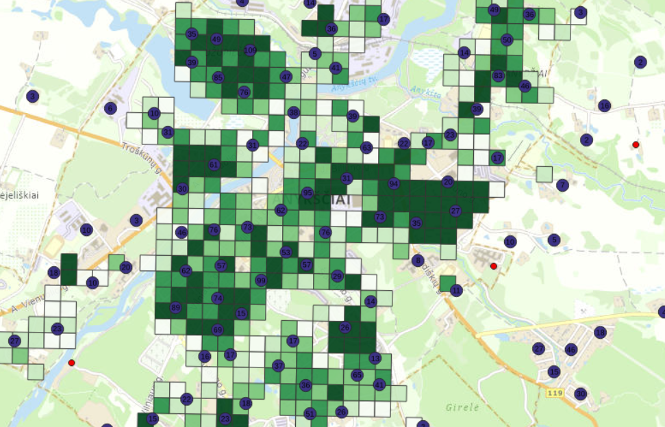
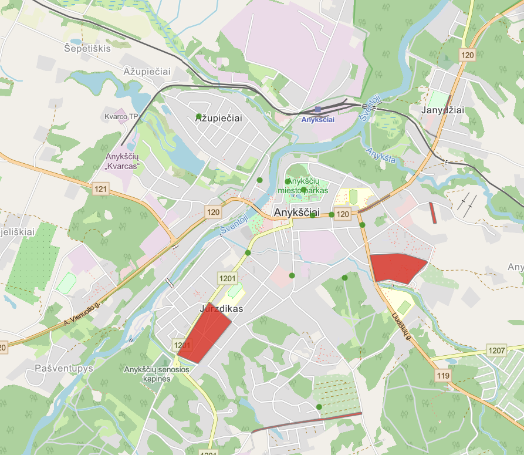

Šis interaktyvus portalas sukurtas siekiant vienoje vietoje apjungti skirtingus erdvinius duomenis apie anykčių miestą ir savivaldybę. Visi žemėlapiai yra parengti naudojant atvirus duomenis. Žemėlapiai teikia informacija apie gyventojų tankumą, pastaų buklę, saugomas teritorijas ir sklypus. Taip pat probleminių vietų registre galima pamatyti ir regstruoti problemas taip prisidedant prie efektyvenio miesto vystimo.

Interaktyvus žemėlapis vizualizuojantis gyventojų skaičiaus tankumą ir pasiskirstymą Anykščių savivaldybėje 100 metrų gardelėse.

Interaktyvus žemėlapis vizualizuojantis sklypus bei saugomas teritorijas Anykščių savivaldybėje.

Interaktyvus žemėlapis vizualizuojantis pastatus Anykščių rajone.

Žemėlapis vizualizuojantis gyventojų skaičiaus tankumą ir pastatus Anykščių savivaldybėje su papildomais sluoksniais.

Interaktyvus žemėlapis vizualizuojantis problemines Anykščių miesto vietas.